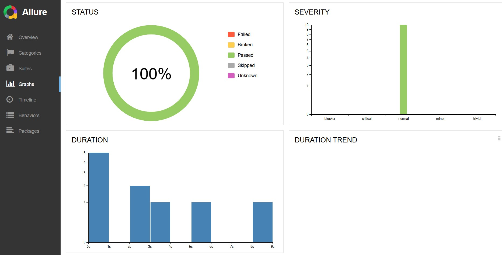
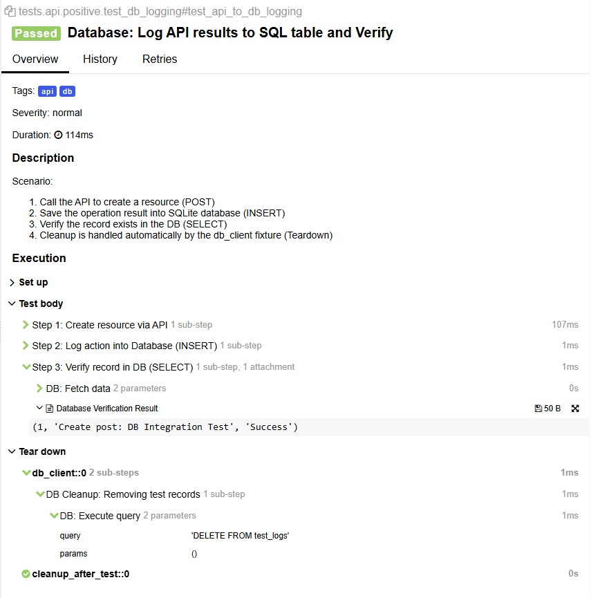

Eco-Hybrid-Lab
Hybrid Test Automation Framework: UI • API • Database
📊 Performance & Infrastructure Metrics

Summary: 100% Pass Rate | 10 Tests | 13.5s Execution Time
API/DB Layer (< 120ms): High-speed integration checks with integrated SQL auditing
UI Resilience (1s - 2s): Rapid UI feedback via asset blocking and native events
Dockerized CI/CD: Optimized with Buildx layer caching (~45s cached runs)
Parallel Execution: Multi-threaded link auditing (11 parallel workers)
🔍 Deep Traceability Example (Click to expand)
For the API to DB Sync scenario, the report captures every internal step with raw data evidence:
- POST Request: Resource creation verified in 107ms
- DB Logging: Action recorded via SQLAlchemy in 1ms
- Data Audit: Direct SQL SELECT verifies persistence:
(1, 'Create post...', 'Success')
- Auto-Cleanup: Environment reset via Tear down fixtures automatically

Key Takeaway: Transitioning to a Dockerized hybrid approach reduced test execution time to under 14s while ensuring 100% environment parity.
🟢 Positive Scenarios (Happy Path)
| Scenario |
Layer |
Technical Highlights |
Validation |
Risk Mitigated |
| E2E Shopping Flow | Hybrid | POM, Session persistence | UI State + URL verification | Broken conversion funnel |
| API Data Contract | API | Type checking, JSON Schema | Status 201; Header integrity | Integration mismatches |
| API to DB Sync | API+DB | Singleton DB Client | SQL SELECT cross-match | Silent data loss |
| Add to Cart | UI | Dynamic dialog handling | Cart persistence; Alert automation | UI/Logic synchronization |
🔴 Negative Scenarios (Resilience)
| Scenario |
Layer |
Technical Highlights |
Validation |
Risk Mitigated |
| Empty Checkout | UI | Turbo Mode Asset blocking | Alert Interception; No-wait | UI validation bypass |
| Broken Links Audit | UI/API | Multi-threading (11 workers) | HTTP Status 200/300 | Dead UX / Broken SEO |
| Auth Resilience | UI | Event-driven (expect_event) | Regex alert text match | Flaky tests / Race conditions |
| Malformed API Data | API | Schema resilience | JSON Contract validation | Backend crashes |
🛠 Engineering DNA (Best Practices)
Infrastructure as Code
Fully containerized via Docker to ensure 100% parity between Local and CI environments.
Intelligent Caching
GitHub Actions pipeline optimized with persistent layer caching, reducing build time by ~70%.
Zero-Sleep Policy
No static timeouts. All async states handled via Playwright's native listeners and smart assertions.
Deep Observability
Automated Allure reporting with integrated screenshots, browser trace logs, and SQL snapshots.
🚀 Tech Stack
- Python 3.13
- Docker
- GitHub Actions
- Playwright (Chromium)
- Pytest
- SQLAlchemy
- Allure Reports
📂 Project Structure
. (root)
├── Dockerfile # Container configuration
├── .github/workflows/ # CI/CD Pipeline
├── data/ # DB initialization
├── pages/ # Page Object Models
├── tests/ # Hybrid suites
├── utils/ # Clients & Loggers
└── requirements.txt # Dependencies